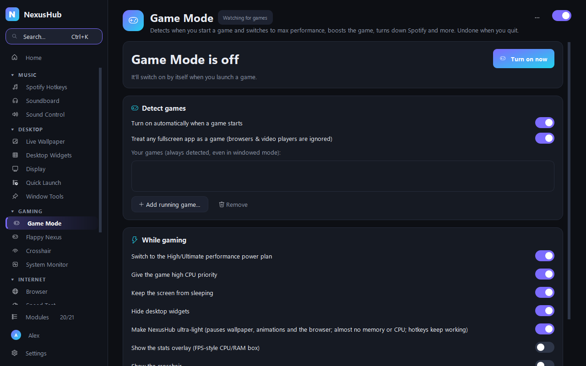
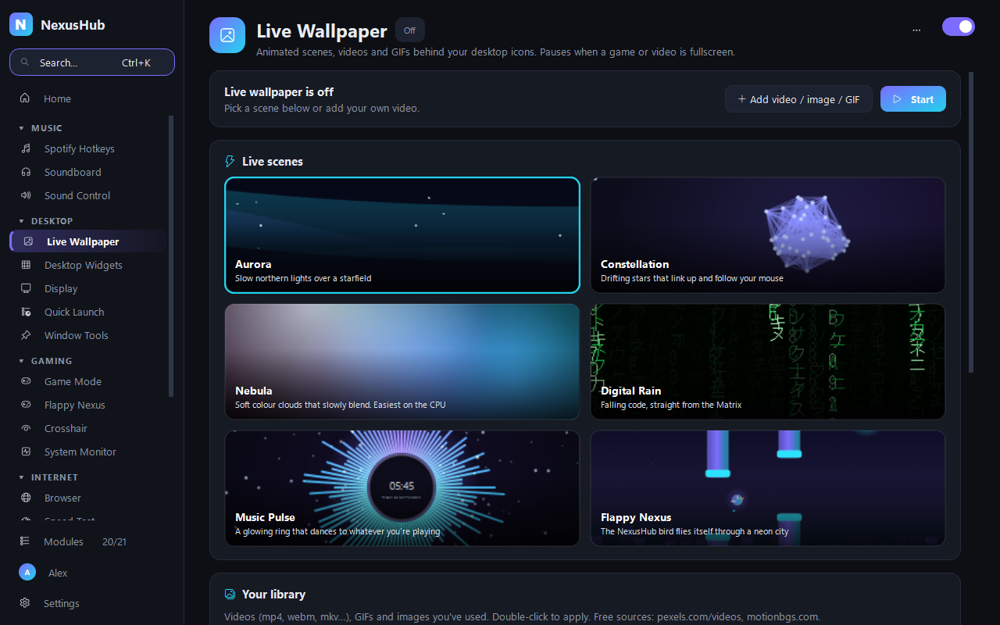
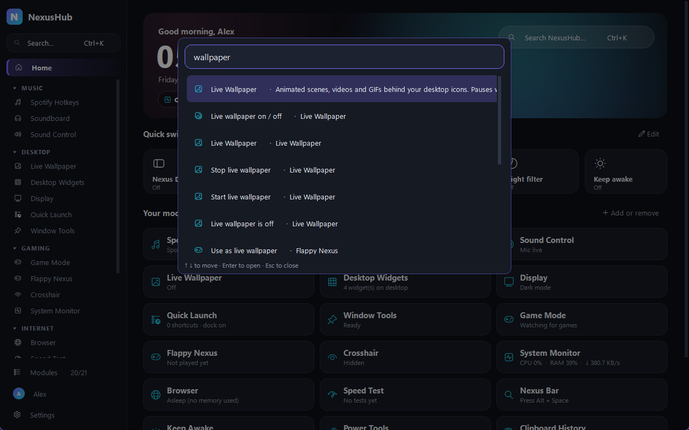
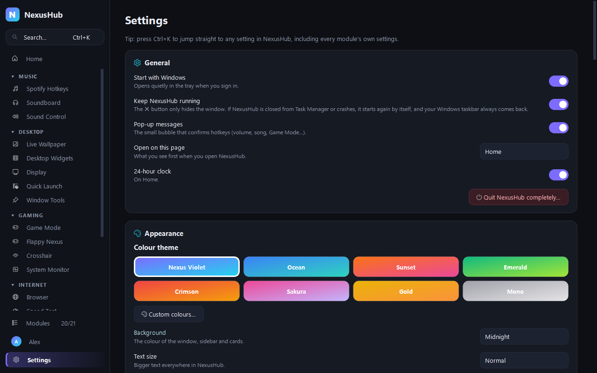

Your PC.
Your rules.
NexusHub adds the things Windows forgot: hotkeys for Spotify, a Game Mode that nearly vanishes while you play, live wallpapers, a magnifying dock and 20 more handy tools. All in one light, free app.

Windows is great.
It's just missing a few things.
Skip a song without leaving your game. Make your desktop come alive. Find any setting in a second. NexusHub puts it all in one place, and only runs what you switch on.
Hotkeys for everything
Play, skip, change Spotify's volume, mute your mic, pin windows, switch speakers. From anywhere, even in fullscreen games.
A real Game Mode
Starts by itself when you launch a game: max performance, the game boosted, Spotify turned down, and NexusHub drops to a few MB.
A desktop that's alive
Live wallpapers that dance to your music, glassy widgets, and a magnifying dock that replaces the taskbar if you want it to.
Find anything with Ctrl + K
Every module, every setting, every hotkey. Type a word and jump straight to it. No hunting through menus.
Make it yours
8 colour themes or your own, 5 backgrounds, text size, spacing, corners, compact sidebar, your own app name. Even the dock.
Light by design
Switched-off modules use nothing. The built-in browser sleeps when you're not using it, and memory goes back to Windows.
Press play. NexusHub gets out of the way.
Game Mode notices when a game starts and tunes your PC for it. Then NexusHub goes ultra-light, pausing its wallpaper, widgets and animations, while your hotkeys keep working.
- Automatic: detects fullscreen games and your own list
- Boost: high-performance power plan and high CPU priority for the game
- Crosshair overlay and an FPS-style stats box on top of games
- Everything goes back to normal the moment you quit

Your music, one keypress away.
Control Spotify without alt-tabbing: play, skip, and change Spotify's own volume so your game and Discord stay the same. Save your favourite albums and playlists to their own hotkeys, and they start on shuffle.
- Ctrl Alt P play / pause, → next, ↑ louder
- Soundboard that can play into your mic for Discord
- Per-app volume and one-key microphone mute

Wallpapers that move. A dock that magnifies.
Pick a live scene (aurora, starfields, a music-reactive ring, or Flappy Nexus, which you can play right on your desktop) or download free HD wallpapers from inside the app. Blurry ones? One click enhances them with AI. It pauses by itself when a window covers the desktop, so it's easy on your PC.
- Nexus Dock: a magnifying dock with a Launchpad, replacing the taskbar (switch back any time)
- Desktop widgets: clock, weather, PC stats, now playing
- Night filter and extra dimming below Windows' minimum

Can't find a setting? Just type.
Press Ctrl K in NexusHub and type what you want: “volume”, “wallpaper”, “crosshair colour”. You land right on it, highlighted. The Modules page lets you switch whole features on or off in one click.
- A friendly welcome tour switches on only what you care about
- Pin your favourite modules to the top of the sidebar
- Every module has a Reset button, so experimenting is safe

Big on features. Small on memory.
Only what you switch on runs. And while you game, NexusHub nearly disappears.
modules, all in one app
typical memory with the window closed
while you're gaming (ultra-light mode)
used by the browser while it sleeps
Measured on our test PC with most modules switched on, as shown in Task Manager. Your numbers may differ.
Try a theme. This page changes too.
NexusHub comes in eight colour themes, or any two colours you pick. Click one below: you're now looking at Nexus Violet.

Think you can beat the leaderboard?
NexusHub has a little arcade game built in, and it doubles as a live wallpaper you can play right on your desktop. Warm up here. Scores from the app go on the global leaderboard.
Click, tap or press Space to flap
🏆 Leaderboard Loading
Web scores stay in your browser. To post a score everyone can see, play Flappy Nexus in the app (Gaming → Flappy Nexus). Unlock new birds at 10, 20, 35, 50, 75 and 100 points.
Download NexusHub and competeWindows, plus a little magic
| What you want to do | Windows alone | With NexusHub |
|---|---|---|
| Skip a song or change Spotify's volume while gaming | Alt-tab out | ✓ One hotkey |
| Tune your PC automatically when a game starts | By hand | ✓ Automatic |
| Animated wallpaper that reacts to your music | ✕ | ✓ |
| A magnifying dock and Launchpad | ✕ | ✓ |
| Clipboard history you can search and pin | Basic | ✓ |
| Mute your mic everywhere with one key | ✕ | ✓ |
| A crosshair and stats overlay for games | ✕ | ✓ |
| Find any setting by typing | Sometimes | ✓ Ctrl + K |
| A built-in arcade game with a leaderboard | ✕ | ✓ Obviously |
Your stuff stays yours
No ads, no tracking, no account required. Signing in with Google is optional and only backs up your settings to a private folder in your own Drive.
Runs on your PC
Settings live in your own user folder. We don't run servers that collect anything.
No tracking
No analytics, no telemetry, no ads. Ever.
Leave any time
Uninstall from Windows Settings like any app. Your taskbar and settings go back to normal.
Get NexusHub
One small setup file. Everything is included, so there's nothing else to install.
Download NexusHub SetupThanks for downloading! Open NexusHub-Setup.exe when it finishes. 👇
- 1
Download
Click the button above to get NexusHub-Setup.exe.
- 2
Run the setup
Open it and click Install. If Windows says “Windows protected your PC”, click More info → Run anyway.
- 3
Pick what you want
A quick welcome tour switches on what you care about. Later, find NexusHub in the Start menu.
Questions
Is NexusHub really free?
Yes. No ads, no in-app purchases, no “pro” version.
What do I need to install it?
Just Windows 10 or 11. The setup includes everything NexusHub needs, so you don't need Python or anything else.
Windows says “Windows protected your PC”. Is it safe?
Windows shows this for new apps that aren't downloaded by many people yet. Click More info, then Run anyway. Your antivirus may scan the file first, which can take a few seconds.
Will it slow down my games?
The opposite. Game Mode boosts your game, and NexusHub itself goes ultra-light while you play: it pauses its wallpaper, widgets and animations and gives its memory back to Windows (usually around 10 MB). Your hotkeys keep working.
Will it break my Windows taskbar?
No. The Nexus Dock only hides the Windows taskbar. Switching the dock off, quitting NexusHub, uninstalling, or even a crash brings the normal taskbar straight back.
Where is NexusHub after installing?
Open the Start menu and type NexusHub, or use the desktop shortcut. When it's running, its icon is in the system tray near the clock. Inside NexusHub, press Ctrl + K to find anything.
How do updates work?
NexusHub checks for a new version once a day and shows a banner on Home. Click Update now: it downloads, updates and restarts in about a minute, keeping all your settings.
Does it work in games?
Yes. Hotkeys work in fullscreen games. The crosshair and stats overlay work in borderless and windowed modes. Some competitive games have strict rules about overlays, so check your game's rules before using the crosshair in ranked matches.
How does the Flappy Nexus leaderboard work?
Play in the app and your best score is posted with the nickname you choose (you can switch this off). Only your nickname and score are public. Games played on this website stay on your device.
How do I uninstall it?
Like any other app: Windows Settings → Apps → Installed apps → NexusHub → Uninstall. Your normal taskbar comes back, and you can choose to delete your settings too.